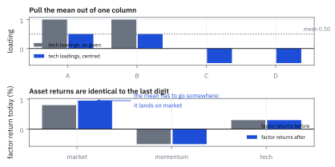
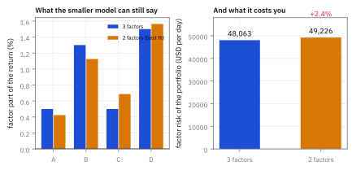
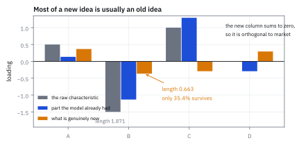

26.3 Rotations, Projections, and Push-Outs
factor model ตัวเดียวกันเขียนได้หลายแบบ ทุกแบบให้ผลตอบแทนของหุ้น กำไรขาดทุนรวม และความเสี่ยงรวมเท่ากัน แต่คำตอบว่า factor ไหนทำเงินหรือเสียเงินเปลี่ยนตามแบบที่เลือก ส่วนการลดหรือเพิ่มจำนวน factor มีราคาที่ต้องจ่าย
ทุกเช้า ทีมความเสี่ยงของกองทุนได้รายงานฉบับหนึ่ง รายงานนี้บอกว่าเมื่อวานพอร์ตได้หรือเสียเงินเพราะอะไร เช่น เพราะตลาดทั้งตลาดขึ้น หรือเพราะหุ้นกลุ่มหนึ่งถูกเทขาย การแบ่งกำไรขาดทุนตามต้นเหตุแบบนี้เรียกว่า attribution
พอร์ตในเรื่องนี้คือพอร์ตหุ้นสี่ตัวจากหน้าสมการ factor model ตัวเลขลบแปลว่าขาย short คือยืมหุ้นมาขาย และได้เงินเมื่อราคาลง
- หุ้น A ซื้อไว้ \$3 ล้าน
- หุ้น B ขาย short \$2 ล้าน (เขียนเป็น −\$2 ล้าน)
- หุ้น C ซื้อไว้ \$4 ล้าน
- หุ้น D ขาย short \$5 ล้าน (เขียนเป็น −\$5 ล้าน)
เงินฝั่งซื้อเท่าฝั่งขายพอดี เพราะ $3-2+4-5=0$ พอร์ตแบบนี้เรียกว่า dollar-neutral
รายงานใช้ factor model คือแบบจำลองที่บอกว่าหุ้นทุกตัวขยับตามแรงร่วมไม่กี่ตัว แรงร่วมนี้เรียกว่า factor ในที่นี้มีสามตัว
- market คือการขึ้นลงของตลาดทั้งตลาด เมื่อวานขึ้น 0.80%
- momentum คือแรงที่ดันหุ้นที่ราคาวิ่งดีมาก่อน เมื่อวานลง 0.50%
- tech คือแรงที่ดันหุ้นกลุ่มเทคโนโลยี เมื่อวานขึ้น 0.30%
หน้าสมการ factor modelคำนวณไว้แล้วว่าพอร์ตนี้เดิมพันกับ factor แต่ละตัวเท่าไร ตัวเลขนี้เรียกว่า exposure หน่วยเป็น \$ ล้าน ของพอร์ตนี้คือ market 0, momentum 13.8 และ tech 1 (market เป็น 0 เพราะเงินซื้อเท่ากับเงินขายพอดี)
กำไรขาดทุนจาก factor หนึ่งตัวคือ exposure คูณการขยับของ factor นั้น หน่วยของผลคูณคือ \$1 ล้าน × 1% = \$10,000 เช่น exposure 13.8 ต่อ momentum แปลว่า ถ้า momentum ขยับ 1% พอร์ตได้หรือเสีย $13.8\times\$10{,}000=\$138{,}000$
รายงาน A ใช้วิธีนี้ตรง ๆ คือเอา exposure คูณการขยับของเมื่อวาน
หน่วยละ \$10,000 รายงาน A จึงบอกว่า market \$0, momentum −\$69,000 และ tech +\$3,000 รวมกันได้ $0-6.90+0.30=-6.60$ หน่วย คือ −\$66,000
รายงาน B มาจาก risk model ตัวเดียวกัน (risk model คือชุดตัวเลขของ factor model ที่บริษัทผู้ให้บริการขาย) ต่างกันตรงที่ผู้ให้บริการแปลง factor ทั้งสามให้ “ไม่สัมพันธ์กัน” คือรู้ว่า factor ตัวหนึ่งขยับไปทางไหน ก็ยังเดาไม่ได้เลยว่าอีกตัวจะขยับทางไหน รายงาน B บอกว่า
- market −\$5,528
- momentum −\$61,272
- tech +\$800
หน้านี้จะคำนวณตัวเลขชุดนี้ให้ดูทีละขั้น ตอนนี้ดูแค่ยอดรวม $-5{,}528-61{,}272+800=-66{,}000$ เท่ารายงาน A พอดี
ผู้จัดการพอร์ตแย้งว่า “exposure ต่อ market ของเราเป็นศูนย์ รายการ market ต้องเป็นศูนย์ รายงาน B ผิดแน่” จริงไหม?
ลองตอบก่อนเปิดเฉลย
ไม่จริง ทั้งสองฉบับถูก ยอดรวมเท่ากันที่ −\$66,000 ความเสี่ยงจาก factor ก็เท่ากันที่ \$48,063 ต่อวัน (ความเสี่ยงจาก factor คือ SD ของกำไรขาดทุนรายวันส่วนที่มาจาก factor หน้านี้จะคำนวณให้ดูว่าทั้งสองแบบได้เท่ากัน)
ที่ต่างกันคือวิธีแบ่ง รายงาน B วัด momentum และ tech หลังหักส่วนที่ขยับตามตลาดออกก่อน ส่วนที่หักออกไม่ได้หายไป มันไปรวมอยู่ในรายการ market
ตัววัดว่า factor หนึ่งขยับตามตลาดแค่ไหนคือ beta ความหมายคือ เมื่อตลาดขยับ 1% factor นั้นขยับตามโดยเฉลี่ยกี่ % beta คือ covariance กับตลาด หารด้วย variance ของตลาด เขียน covariance เป็น correlation $\rho$ คูณความผันผวนสองตัว แล้วตัดกันได้
$\sigma$ คือความผันผวนรายวันของ factor นั้น และ $\sigma_{\rm mkt}$ คือของตลาด ตัวเลขที่ต้องใช้มาจากหน้าสมการ factor model
- ความผันผวนรายวัน market 1.00%, momentum 0.35%, tech 0.55%
- correlation กับตลาด momentum −0.20, tech +0.50
เดิมพัน momentum \$13.8 ล้าน จึงแอบพกเดิมพันตลาดไว้ด้วย tech \$1 ล้าน ก็พกอีกส่วนหนึ่ง รวมสองส่วนแล้วคูณกับตลาดที่ขึ้น 0.80%
คิดเป็นเงิน $-0.5528\times\$10{,}000=-\$5{,}528$ ตรงกับรายการ market ของรายงาน B การแบ่งกำไรขาดทุนจึงเป็นแค่การเลือกแกนวัด เหมือนเลือกแกนของกราฟ ยอดรวมไม่ขึ้นกับแกนที่เลือก
ภาพรวมก่อนลงสูตร
สองรายงานใน hook ขัดกันได้อย่างไรทั้งที่ใช้ model ตัวเดียวกัน คำตอบอยู่ในวิธีเขียน factor model เอง หน้าสมการ factor modelเขียนผลตอบแทนของหุ้นทุกตัวในหนึ่งวันเป็น
ของในสมการนี้ที่หน้านี้ใช้ตลอดมีดังนี้
- $\mathbf r$ คือ vector ผลตอบแทนของหุ้นสี่ตัวในวันนั้น หน่วยเป็น %
- $\mathbf f=(0.80,\ -0.50,\ 0.30)\%$ คือการขยับของ market, momentum, tech ในวันนั้น เรียกว่า factor return
- $\mathbf B$ คือ matrix loading แถวหนึ่งคือหุ้นหนึ่งตัว คอลัมน์หนึ่งคือ factor หนึ่งตัว loading บอกว่าหุ้นตัวนั้นรับแรงของ factor นั้นกี่เท่า คอลัมน์ market เป็น 1 ทุกตัว คอลัมน์ momentum คือคะแนน momentum ของหุ้นแต่ละตัว (1.2, −0.4, 0.6, −1.4) คอลัมน์ tech เป็น 1 สำหรับหุ้นเทคโนโลยี (A กับ B) และ 0 สำหรับหุ้นอื่น ตัวเลขทั้งหมดมาจากหน้าสมการ factor model
- $\boldsymbol\alpha$ กับ $\boldsymbol\epsilon$ คือส่วนที่เป็นเรื่องของหุ้นแต่ละตัวเอง เช่น ข่าวของบริษัทนั้น เรียกรวมกันว่าส่วนเฉพาะตัว หรือ residual
- $\mathbf w=(3,\ -2,\ 4,\ -5)$ คือเงินที่ถือในหุ้นแต่ละตัว หน่วยเป็น \$ ล้าน
- $\mathbf b=\mathbf B^{\mathsf T}\mathbf w$ คือ exposure ของพอร์ต ช่องที่ $j$ คือผลรวมของเงินในหุ้นแต่ละตัวคูณ loading ของหุ้นตัวนั้นต่อ factor ตัวที่ $j$
ลองคำนวณ $\mathbf b$ เองเพื่อให้เห็นว่าตัวเลข 0, 13.8 และ 1 ใน hook มาจากไหน แต่ละแถวข้างล่างคือหนึ่งคอลัมน์ของ $\mathbf B$ คูณกับ $\mathbf w$
ส่วนที่ factor อธิบายได้คือผลคูณ $\mathbf B\mathbf f$ เราเขียนมันราวกับว่า loading และ factor return เป็นของที่มีอยู่จริงในธรรมชาติ แต่ลองแทรก $\mathbf C^{-1}\mathbf C$ เข้าไปตรงกลาง โดย $\mathbf C$ เป็น matrix สี่เหลี่ยมจัตุรัสตัวไหนก็ได้ที่มี inverse เพราะ $\mathbf C^{-1}\mathbf C=\mathbf I$ ผลคูณจึงไม่เปลี่ยนเลย สิ่งที่เปลี่ยนคือของที่เราเรียกว่า “factor”
แปลว่าข้อมูลผลตอบแทนเลือกแบบให้เราไม่ได้ เราต้องเลือกเอง เหมือนเลือกทิศของแกนในกราฟ จุดเดิมยังอยู่ที่เดิม แต่พิกัดของมันเปลี่ยนตามแกนที่เลือก การแปลงแบบนี้เรียกว่า rotation (ในวงการนี้เรียก rotation แม้ $\mathbf C$ จะไม่ใช่การหมุนจริงก็ตาม)
รูปข้างล่างสรุปความคิดนี้ในภาพเดียว ลูกศรคือเดิมพันของพอร์ต วาดในพิกัดที่ทำให้ความยาวของลูกศรเท่ากับความเสี่ยง แล้วอ่านด้วยแกนสองชุด ความยาวเท่ากันทั้งสองชุด เพราะความเสี่ยงรวมไม่เปลี่ยน แต่เงาบนแต่ละแกนต่างกัน เพราะการแบ่งเปลี่ยน
หลังจาก rotation หน้านี้ดูอีกสองการแปลงที่เปลี่ยนจำนวน factor คือ projection ที่ลดจำนวน factor และ push-out ที่เพิ่ม factor ใหม่ สองการแปลงนี้ไม่ฟรีเหมือน rotation แต่ละอย่างมีราคาที่ต้องจ่าย
รูป — ลูกศรเดียวกัน อ่านด้วยแกนสองชุด
เพื่อให้วาดบนกระดาษสองมิติได้ รูปนี้ตัด tech ออก เหลือสอง factor คือ market กับ momentum ซึ่ง exposure เป็น 0 กับ 13.8 แกนในรูปถูกปรับให้ factor ไม่สัมพันธ์กัน และแต่ละตัวผันผวนหนึ่งหน่วย ในพิกัดแบบนี้ ความยาวของลูกศรเท่ากับความเสี่ยงจาก factor พอดี
ความยาวนั้นหาได้ง่าย เพราะ exposure ต่อ market เป็นศูนย์ ความเสี่ยงทั้งหมดจึงมาจาก momentum ตัวเดียว เท่ากับ exposure ต่อ momentum คูณความผันผวนรายวันของมัน 0.35% คือ $13.8\times0.35=4.83$ หน่วย หรือ $4.83\times\$10{,}000=\$48{,}300$ ต่อวัน
แกนเทาให้ market รับทุกอย่างที่ขยับตามตลาดก่อน เงาของลูกศรบนแกน market คือ $13.8\times(-0.07)=-0.97$ (−0.07 คือ beta ของ momentum ต่อตลาดจาก hook) เงาบนแกน “momentum หลังหักตลาด” คือ 4.73 (ขั้น Cholesky ข้างล่างคำนวณให้ดู) แกนม่วงหมุนไปให้ momentum รับก่อน ลูกศรจึงนอนบนแกน momentum ทั้งเส้น พิกัดเป็น 4.83 กับ 0
ในวันที่ market ขึ้น 0.80% และ momentum ลง 0.50% สองชุดแกนแบ่งความผิดต่างกัน แกนม่วงโทษ momentum ทั้งก้อน $13.8\times(-0.50)=-6.90$ หน่วย หรือ −\$69,000 แกนเทาโทษ market ก่อน $-0.966\times0.80=-0.7728$ หน่วย หรือ −\$7,728 ส่วนที่เหลือเป็นของ momentum $-6.90-(-0.7728)=-6.1272$ หน่วย หรือ −\$61,272 ทั้งสองแบบรวมได้ −\$69,000 เท่ากัน ตัวเลข market ในรูปนี้ต่างจาก −\$5,528 ในรายงาน B เพราะรูปนี้ไม่มี tech
ศัพท์ที่ใช้ในหัวข้อนี้
- Factor, loading, factor return
- factor คือแรงร่วมที่ดันหุ้นหลายตัวพร้อมกัน เช่น ตลาดทั้งตลาด loading คือตัวเลขที่บอกว่าหุ้นตัวหนึ่งรับแรงนั้นกี่เท่า factor return คือขนาดที่แรงนั้นขยับในวันหนึ่ง หน่วยเป็น %
- Exposure
- เดิมพันของทั้งพอร์ตต่อ factor หนึ่งตัว คือผลรวมของเงินที่ถือในหุ้นแต่ละตัวคูณ loading ของหุ้นตัวนั้น เขียนรวมเป็น $\mathbf b=\mathbf B^{\mathsf T}\mathbf w$ หน่วยเป็น \$ ล้าน
- Attribution
- การแบ่งกำไรขาดทุนของพอร์ตตามต้นเหตุ ส่วนของ factor ตัวที่ $j$ คือ exposure คูณ factor return $b_jf_j$
- ความเสี่ยงจาก factor
- SD ของกำไรขาดทุนรายวันของพอร์ต เฉพาะส่วนที่มาจาก factor เท่ากับ $\sqrt{\mathbf b^{\mathsf T}\boldsymbol\Omega_f\mathbf b}$ ในหน้านี้คือ \$48,063 ต่อวัน
- Residual (ส่วนเฉพาะตัว)
- ส่วนของผลตอบแทนหุ้นที่ factor อธิบายไม่ได้ เช่น ข่าวของบริษัทนั้นเอง factor model สมมติว่า residual ของหุ้นคนละตัวไม่สัมพันธ์กัน
- ไม่สัมพันธ์กัน (uncorrelated)
- correlation เป็นศูนย์ รู้ว่าตัวหนึ่งขยับทางไหนก็ยังเดาไม่ได้ว่าอีกตัวจะขยับทางไหน
- Beta
- เมื่อตลาดขยับ 1% ของอีกอย่างหนึ่งขยับตามโดยเฉลี่ยกี่ % คำนวณจาก covariance กับตลาด หารด้วย variance ของตลาด
- Cholesky
- การแยก covariance matrix เป็น $\mathbf L\mathbf L^{\mathsf T}$ โดย $\mathbf L$ เป็น matrix สามเหลี่ยมล่าง ใช้สร้าง factor ชุดใหม่ที่ไม่สัมพันธ์กัน ตัวแรกเต็มตัว ตัวถัดไปหักส่วนที่ขยับตามตัวก่อนหน้าออก
- Rotation
- การเปลี่ยน loading เป็น $\mathbf B\mathbf C^{-1}$ และเปลี่ยน factor return เป็น $\mathbf C\mathbf f$ พร้อมกัน โดย $\mathbf C$ เป็น matrix ที่มี inverse จำนวน factor เท่าเดิม และทุกอย่างที่วัดได้จริงเท่าเดิม ใช้ทำให้ model ตัวเดียวกันมีหน้าตาที่เหมาะกับคนอ่านแต่ละกลุ่ม
- Rotational indeterminacy
- ข้อเท็จจริงที่ว่า factor model ตัวหนึ่งเขียนได้หลายแบบ และทุกแบบทำนายผลตอบแทนเหมือนกันหมด ข้อมูลจึงเลือกแบบให้เราไม่ได้ เราต้องเลือกเองแล้วใช้แบบนั้นตลอด
- Whitening
- rotation ที่ทำให้ covariance ของ factor ใหม่เป็น identity คือ factor ใหม่ไม่สัมพันธ์กันเลย และแต่ละตัวมี variance เป็น 1 ผลคือความเสี่ยงจาก factor เท่ากับรากที่สองของผลบวกกำลังสองของ exposure อ่านง่ายเหมือนความยาวของ vector
- Centring และ z-scoring
- centring คือการลบค่าเฉลี่ยออกจากคอลัมน์ loading z-scoring คือ centring แล้วหารด้วย SD (standard deviation) ของคอลัมน์ด้วย ทำให้อ่านได้ว่าหุ้นรับ factor มากกว่าหุ้นเฉลี่ยแค่ไหน การลบค่าเฉลี่ยเป็น rotation ได้เฉพาะเมื่อ vector ที่เป็น 1 ทุกตัวเขียนเป็นผลรวมถ่วงของคอลัมน์ของ $\mathbf B$ ได้
- Projection
- การลดจำนวน factor โดยเลือก factor return ใหม่ที่ทำให้ส่วนของ factor ใกล้ของเดิมที่สุด เหมือนฉายเงาลงพื้น ฉายเงาซ้ำก็ได้เงาเดิม
- Push-out
- การเพิ่ม factor ใหม่โดยใช้เฉพาะส่วนของ loading ใหม่ที่ตั้งฉากกับทุกคอลัมน์เดิม ผลคือ factor return เก่าไม่ขยับเลย
สัญลักษณ์และหน่วย
| สัญลักษณ์ | ความหมาย | หน่วย |
|---|---|---|
| $\mathbf B,\ \mathbf f,\ \mathbf w,\ \mathbf b$ | matrix loading, factor return ของวันนั้น, เงินที่ถือในหุ้นแต่ละตัว และ exposure ของพอร์ต $\mathbf b=\mathbf B^{\mathsf T}\mathbf w$ | ไม่มีหน่วย, %, \$ ล้าน, \$ ล้าน |
| $\boldsymbol\Omega_f$ | covariance ของ factor return ทั้งสามตัว | (% ต่อวัน)² |
| $m$ | จำนวน factor ในหน้านี้ $m=3$ | ตัว |
| $\mathbf C$ | matrix $m\times m$ ที่มี inverse ใช้ rotate | ตามการแปลง |
| $\tilde{\mathbf B},\ \tilde{\mathbf f},\ \tilde{\boldsymbol\Omega}_f,\ \tilde{\mathbf b}$ | loading, factor return, covariance และ exposure หลัง rotate | ตามการแปลง |
| $\mathbf L$ | Cholesky factor ที่ $\boldsymbol\Omega_f=\mathbf L\mathbf L^{\mathsf T}$ | % ต่อวัน |
| $\mathbf e,\ \mathbf a,\ \boldsymbol\nu$ | vector ที่เป็น 1 ทุกตัว, น้ำหนักที่ $\mathbf B\mathbf a=\mathbf e$ และค่าที่บวกเข้าแต่ละคอลัมน์ | ไม่มีหน่วย |
| $\mathbf A,\ \mathbf g,\ \mathbf H$ | loading ของ model ที่เล็กลง, factor return ของมัน และตัวแปลง $\mathbf g=\mathbf H\mathbf f$ | ไม่มีหน่วย, %, ไม่มีหน่วย |
| $\mathbf P$ | projection ลงบน range ของ matrix หนึ่ง | ไม่มีหน่วย |
| $\hat{\mathbf a}$ | ส่วนของ loading ใหม่ที่ตั้งฉากกับทุกคอลัมน์ของ $\mathbf B$ | ไม่มีหน่วย |
ขั้นที่ 1 — rotation: อะไรคงที่และอะไรไม่
ก่อนจะเชื่อรายงาน B เราต้องรู้ให้แน่ว่าการแปลงแบบนี้เปลี่ยนอะไรได้บ้าง และเปลี่ยนอะไรไม่ได้ ขั้นนี้ไม่ได้เพิ่มข้อสมมติใหม่ มันแค่เขียนของเดิมใหม่
แทรก $\mathbf C^{-1}\mathbf C=\mathbf I$ ระหว่าง $\mathbf B$ กับ $\mathbf f$ แล้วจับกลุ่มใหม่ ตั้งชื่อของใหม่ว่า $\tilde{\mathbf B}=\mathbf B\mathbf C^{-1}$ (loading ใหม่) และ $\tilde{\mathbf f}=\mathbf C\mathbf f$ (factor return ใหม่) จากนั้นตามดูของอีกสี่อย่าง
- covariance ของ factor ใหม่ $\tilde{\boldsymbol\Omega}_f$
- exposure ใหม่ $\tilde{\mathbf b}=\tilde{\mathbf B}^{\mathsf T}\mathbf w$
- กำไรขาดทุนรวมจาก factor $\tilde{\mathbf b}^{\mathsf T}\tilde{\mathbf f}$
- variance ของกำไรขาดทุนจาก factor $\tilde{\mathbf b}^{\mathsf T}\tilde{\boldsymbol\Omega}_f\tilde{\mathbf b}$ (รากที่สองของมันคือความเสี่ยงจาก factor)
ใจความคือ ทุกที่ที่ $\mathbf C$ โผล่เข้ามา มันมาเป็นคู่กับ $\mathbf C^{-1}$ แล้วตัดกันเหลือ $\mathbf I$ เสมอ ผลตอบแทนของหุ้นทุกตัวจึงเท่าเดิม กำไรขาดทุนรวมจาก factor เท่าเดิม และความเสี่ยงรวมจาก factor เท่าเดิม ส่วนเฉพาะตัว $\boldsymbol\alpha+\boldsymbol\epsilon$ ไม่ถูกแตะเลย
มีสองจุดที่ต้องรู้ว่าทำไมทำได้ covariance ใหม่ได้จากกฎ covariance ของการแปลงเชิงเส้น ถ้า $\tilde{\mathbf f}=\mathbf C\mathbf f$ แล้ว $\operatorname{cov}(\tilde{\mathbf f})=\mathbf C\operatorname{cov}(\mathbf f)\mathbf C^{\mathsf T}$ ส่วน exposure ใหม่ใช้กฎ transpose ของผลคูณที่กลับลำดับ $(\mathbf B\mathbf C^{-1})^{\mathsf T}=\mathbf C^{-\mathsf T}\mathbf B^{\mathsf T}$ โดย $\mathbf C^{-\mathsf T}$ คือ inverse ของ $\mathbf C^{\mathsf T}$ exposure จึงแปลงด้วย $\mathbf C^{-\mathsf T}$ ซึ่งสวนทางกับ factor return ที่แปลงด้วย $\mathbf C$ การแปลงสวนทางกันนี้เองที่ทำให้ผลคูณของสองอย่างไม่เปลี่ยน
สิ่งที่เปลี่ยนได้คือแต่ละก้อน $\tilde b_j\tilde f_j$ และความเสี่ยงของ factor แต่ละตัว นี่คืออิสระของเครื่องมือนี้ และเป็นอันตรายของมันด้วย ข้อดีคือเราเลือกแบ่งให้ตรงกับคำถามของคนอ่านได้ ข้อเสียคือคนสองคนที่ใช้คนละแบบจะเถียงกันเรื่องตัวเลขที่ถูกทั้งคู่ แบบเดียวกับผู้จัดการพอร์ตใน hook
ขั้นที่ 2 — rotation แรก: ดึงค่าเฉลี่ยออกจากคอลัมน์ tech
ผู้ให้บริการ risk model มักส่ง loading แบบที่ลบค่าเฉลี่ยของคอลัมน์ออกแล้ว เพราะคนอ่านอยากรู้ว่าหุ้นตัวหนึ่งรับ factor มากกว่าหุ้นทั่วไปแค่ไหน ไม่ใช่ตัวเลขดิบ ลองทำแบบนี้กับคอลัมน์ tech แล้วดูว่าการแบ่งกำไรขาดทุนเปลี่ยนอย่างไร
โจทย์ให้อะไรมาบ้าง: คอลัมน์ tech ของ $\mathbf B$ คือ (1, 1, 0, 0) ค่าเฉลี่ยของมันคือ $(1+1+0+0)/4=0.5$ ถ้าลบ 0.5 ออกจากทุกแถว คอลัมน์ tech จะกลายเป็น (0.5, 0.5, −0.5, −0.5) ซึ่งมีค่าเฉลี่ยศูนย์ เราอยากรู้ว่าการลบนี้เป็น rotation หรือไม่ จึงต้องเขียนมันเป็น matrix ให้ได้ ของที่ต้องใช้มีสามอย่าง
- $\mathbf e=(1,\ 1,\ 1,\ 1)$ คือ vector ที่เป็น 1 ทุกตัว หนึ่งช่องต่อหุ้นหนึ่งตัว
- $\boldsymbol\nu=(0,\ 0,\ -0.5)$ คือค่าที่บวกเข้าแต่ละคอลัมน์ คอลัมน์ market กับ momentum ไม่บวกอะไร คอลัมน์ tech บวก −0.5 ทุกแถว การบวกนี้เขียนได้ว่า $\mathbf B+\mathbf e\boldsymbol\nu^{\mathsf T}$ เพราะ $\mathbf e\boldsymbol\nu^{\mathsf T}$ คือ matrix ที่ทุกแถวเป็น (0, 0, −0.5)
- $\mathbf a=(1,\ 0,\ 0)$ คือตัวเลือกคอลัมน์แรก คอลัมน์ market ของ $\mathbf B$ เป็น 1 ทุกตัว จึงเขียน $\mathbf e=\mathbf B\mathbf a$ ได้
ข้อสุดท้ายสำคัญที่สุด เพราะมันทำให้ดึง $\mathbf B$ ออกมาเป็นตัวหน้าได้ การลบค่าเฉลี่ยจึงกลายเป็นการคูณ $\mathbf B$ ด้วย matrix ตัวหนึ่ง เทียบกับรูป $\tilde{\mathbf B}=\mathbf B\mathbf C^{-1}$ ในขั้นที่ 1 จะได้ $\mathbf C^{-1}=\mathbf I+\mathbf a\boldsymbol\nu^{\mathsf T}$ เราเดาว่า $\mathbf C=\mathbf I-\mathbf a\boldsymbol\nu^{\mathsf T}$ แล้วจะตรวจว่าเดาถูกในคำตอบ จากนั้นหา factor return ใหม่ $\tilde{\mathbf f}=\mathbf C\mathbf f$ และ exposure ใหม่ $\tilde{\mathbf b}$
ตอนหา $\tilde{\mathbf f}$ เราจับกลุ่ม $\mathbf a\boldsymbol\nu^{\mathsf T}\mathbf f=\mathbf a(\boldsymbol\nu^{\mathsf T}\mathbf f)$ ได้ เพราะ $\boldsymbol\nu^{\mathsf T}\mathbf f$ เป็นตัวเลขตัวเดียว ตอนหา $\tilde{\mathbf b}$ เราใช้ $\mathbf a^{\mathsf T}\mathbf B^{\mathsf T}=(\mathbf B\mathbf a)^{\mathsf T}=\mathbf e^{\mathsf T}$ ซึ่งก็คือข้อเท็จจริงเดิมว่าคอลัมน์ market เป็น 1 ทุกตัว ผลคือ $\mathbf e^{\mathsf T}\mathbf w$ เป็นเงินรวมของพอร์ต (เงินซื้อลบเงินขาย)
คำตอบ: ต้องตรวจก่อนว่าเดาถูก คือ $\mathbf C=\mathbf I-\mathbf a\boldsymbol\nu^{\mathsf T}$ เป็น inverse ของ $\mathbf I+\mathbf a\boldsymbol\nu^{\mathsf T}$ จริง กระจายผลคูณแล้ว พจน์ $+\mathbf a\boldsymbol\nu^{\mathsf T}$ กับ $-\mathbf a\boldsymbol\nu^{\mathsf T}$ ตัดกัน เหลือพจน์เดียวที่มี $\boldsymbol\nu^{\mathsf T}\mathbf a$ อยู่ข้างใน และ $\boldsymbol\nu^{\mathsf T}\mathbf a=0(1)+0(0)+(-0.5)(0)=0$
การลบค่าเฉลี่ยครั้งนี้จึงเป็น rotation จริง ครึ่งหนึ่งของ tech ที่ถูกดึงออกจากคอลัมน์ tech ต้องไปอยู่ที่ไหนสักแห่ง มันไปอยู่ที่ market ดังนั้น factor return ของ market ใหม่คือ $\tilde f_1=0.80+0.5(0.30)=0.95\%$
market ใหม่คือ $f_1+0.5f_3$ มันจึงผันผวนมากขึ้นด้วย ใช้สูตร variance ของผลบวก $\operatorname{var}(X+cY)=\operatorname{var}X+c^2\operatorname{var}Y+2c\operatorname{cov}(X,Y)$ ตัวเลขที่ต้องใช้มาจากความผันผวนและ correlation ในหน้าสมการ factor model (ขั้นที่ 4 จะใช้ชุดเดียวกันอีก)
- $\operatorname{var}f_1=1.00^2=1$
- $\operatorname{var}f_3=0.55^2=0.3025$
- $\operatorname{cov}(f_1,f_3)=0.50\times1.00\times0.55=0.275$ (0.50 คือ correlation ของ market กับ tech)
ความผันผวนของ market ใหม่จึงเป็น 1.1622% ต่อวัน แทนที่จะเป็น 1.00%
แล้วกำไรขาดทุนของพอร์ตเราเปลี่ยนไหม พอร์ตของเรามีเงินซื้อเท่าเงินขาย $\mathbf e^{\mathsf T}\mathbf w=3-2+4-5=0$ ดังนั้น $\tilde{\mathbf b}=\mathbf b+\boldsymbol\nu(0)=\mathbf b$ exposure เท่าเดิม และการแบ่งยังเป็น \$0, −\$69,000, +\$3,000 เหมือนรายงาน A
ความต่างจะเห็นในพอร์ตที่ซื้ออย่างเดียว ลองพอร์ต $\mathbf w=(3,\ 2,\ 4,\ 5)$ \$ ล้าน คือซื้อหุ้นทั้งสี่ตัว รวม \$14 ล้าน exposure ของมันคำนวณแบบเดียวกับภาพรวม
หลังดึงค่าเฉลี่ย exposure ต่อ market กับ momentum เท่าเดิม เพราะ $\boldsymbol\nu$ มีศูนย์ในสองช่องแรก แต่ exposure ต่อ tech เปลี่ยนเป็น $\tilde b_3=b_3+(-0.5)(\mathbf e^{\mathsf T}\mathbf w)$ ก้อนกำไรขาดทุนก่อนและหลังดึงค่าเฉลี่ยเป็นดังนี้ (หน่วย \$10,000)
ก่อนดึงค่าเฉลี่ย การแบ่งคือ +\$112,000, +\$9,000, +\$15,000 หลังดึงค่าเฉลี่ยคือ +\$133,000, +\$9,000, −\$6,000 ยอดรวมเท่ากัน $11.2+0.9+1.5=13.3+0.9-0.6=13.6$ หรือ +\$136,000
ตรวจเองใน 10 วินาที: exposure ต่อ tech ใหม่ของพอร์ตซื้ออย่างเดียวคือ $5-0.5(14)=-2$ ติดลบเพราะพอร์ตถือหุ้น tech \$5 ล้าน น้อยกว่าครึ่งหนึ่งของเงินทั้งหมด \$14 ล้าน ก้อน tech จึงเป็นลบ $-2(0.30)=-0.60$ หรือ −\$6,000
รูป — ดึงค่าเฉลี่ยออกจากคอลัมน์หนึ่ง แล้วมันไปโผล่ที่ market

ขั้นที่ 3 — เมื่อไรการดึงค่าเฉลี่ยไม่ใช่ rotation
การดึงค่าเฉลี่ยในขั้นที่แล้วเป็น rotation ได้ เพราะเราเขียน $\mathbf e=\mathbf B\mathbf a$ ได้ คือ $\mathbf e$ อยู่ใน range ของ $\mathbf B$ (เขียนเป็นผลรวมถ่วงของคอลัมน์ของ $\mathbf B$ ได้) ถ้าเขียนไม่ได้จะเกิดอะไรขึ้น ข้อนี้ต้องรู้ก่อนจะ z-score model ไหนก็ตาม (z-score คือลบค่าเฉลี่ยของคอลัมน์ออก แล้วหารด้วย SD ของคอลัมน์)
ลองดู model เล็กที่สุดที่ไม่มีคอลัมน์ market (ตัวเลขสมมติ) มี factor ตัวเดียวและหุ้นสองตัว loading ของหุ้นทั้งสองคือ 1.5 กับ 0.5 ค่าเฉลี่ยคือ $(1.5+0.5)/2=1.0$ ลบค่าเฉลี่ยออกแล้วได้ $1.5-1.0=0.5$ กับ $0.5-1.0=-0.5$
ใน model ที่มี factor ตัวเดียว $\mathbf C$ เป็น matrix ขนาด 1×1 คือตัวเลข $c$ ตัวเดียว rotation จึงทำได้แค่คูณ loading ทุกตัวด้วย $c$ เดียวกัน คำถามคือ มี $c$ ตัวไหนไหมที่พา (1.5, 0.5) ไปเป็น (0.5, −0.5)
หุ้นตัวแรกต้องการ $c=\tfrac13$ แต่หุ้นตัวที่สองต้องการ $c=-1$ ไม่มีตัวเลขเดียวที่ทำได้ทั้งสองอย่าง จึงไม่มี rotation ไหนพา model หนึ่งไปเป็นอีก model ในรูปข้างล่าง rotation พา loading ไปได้แค่ตามเส้นตรงที่ผ่านจุดกำเนิด แต่การลบค่าเฉลี่ยพามันหลุดออกจากเส้นนั้น
ผลที่ตามมาไม่ใช่เรื่องเล็ก model เดิมบอกว่าสองหุ้นขยับไปทางเดียวกันเสมอ เพราะ loading เป็นบวกทั้งคู่ แต่ model ที่ลบค่าเฉลี่ยแล้วบอกว่าสองหุ้นขยับสวนทางกันเสมอ ลองพอร์ตที่ซื้อหุ้นทั้งสองตัว ตัวละ \$1 ล้าน และให้ factor ผันผวน $\sigma=1\%$ ต่อวัน (สมมติ) แล้วหา exposure ใน model เดิม $b$ และใน model ที่ลบค่าเฉลี่ย $\tilde b$
หน่วยของ $b\sigma$ คือ \$1 ล้าน × 1% = \$10,000 model เดิมจึงบอกว่าพอร์ตนี้เสี่ยงจาก factor $2\times\$10{,}000=\$20{,}000$ ต่อวัน แต่ model ที่ลบค่าเฉลี่ยบอกว่าพอร์ตนี้ไม่มีความเสี่ยงจาก factor เลย สอง model นี้จึงไม่ใช่ model เดียวกันอีกต่อไป
กติกาที่ได้คือ z-scoring เป็น rotation ได้เฉพาะเมื่อ $\mathbf e$ เขียนเป็นผลรวมถ่วงของคอลัมน์ loading ได้ ส่วนการหารด้วย SD ไม่เป็นปัญหา เพราะการคูณคอลัมน์ด้วยตัวเลขคือการใช้ $\mathbf C$ แบบแนวทแยง ซึ่งมี inverse เสมอ
เงื่อนไขนี้จริงในสองกรณีที่พบบ่อย กรณีแรก model มีคอลัมน์ market ที่เป็น 1 ทุกตัว (บางที่เรียกว่า country หรือ intercept) กรณีที่สอง model มีชุดคอลัมน์ industry (กลุ่มอุตสาหกรรม เช่น ธนาคาร พลังงาน) ที่หุ้นทุกตัวอยู่ในหนึ่ง industry พอดี คอลัมน์ industry ทั้งหมดจึงรวมกันได้ 1 ทุกแถว ถ้าไม่มีทั้งสองกรณี การ z-score คือการสร้าง model ใหม่ ที่ทำนายความเสี่ยงและแบ่งกำไรขาดทุนต่างออกไปจริง ๆ
รูป — rotation เลื่อนได้แค่ตามเส้นเดิม การลบค่าเฉลี่ยหลุดออกจากเส้น
ขั้นที่ 4 — rotation ที่สอง: ทำให้ factor ไม่สัมพันธ์กันด้วย Cholesky
ตอนนี้มาสร้างรายงาน B เอง ผู้ให้บริการอยากได้ factor ชุดใหม่ที่ไม่สัมพันธ์กันเลย และแต่ละตัวมี variance เป็น 1 ข้อดีคือ covariance ของ factor ใหม่กลายเป็น $\mathbf I$ ความเสี่ยงจาก factor จึงเหลือแค่ $\sqrt{\tilde{\mathbf b}^{\mathsf T}\mathbf I\,\tilde{\mathbf b}}=\sqrt{\tilde b_1^2+\tilde b_2^2+\tilde b_3^2}$ อ่านง่ายเหมือนความยาวของ vector ในภาษา matrix เราต้องการ $\mathbf C$ ที่ทำให้ $\mathbf C\boldsymbol\Omega_f\mathbf C^{\mathsf T}=\mathbf I$
โจทย์ให้อะไรมาบ้าง: ตัวเลขของ factor ทั้งสามตัวจากหน้าสมการ factor model
- ความผันผวนรายวัน $\sigma_1=1.00\%$ (market), $\sigma_2=0.35\%$ (momentum), $\sigma_3=0.55\%$ (tech)
- correlation $\rho_{21}=-0.20$ (market กับ momentum), $\rho_{31}=+0.50$ (market กับ tech), $\rho_{32}=-0.10$ (momentum กับ tech)
ก่อนอื่นต้องเขียน $\boldsymbol\Omega_f$ ออกมาเป็นตัวเลข ช่องนอกแนวทแยงคือ covariance $\omega_{ij}=\rho_{ij}\sigma_i\sigma_j$ ช่องแนวทแยงคือ variance $\omega_{ii}=\sigma_i^2$
วิธีหา $\mathbf C$ คือแยก $\boldsymbol\Omega_f=\mathbf L\mathbf L^{\mathsf T}$ ด้วย Cholesky โดย $\mathbf L$ เป็น matrix สามเหลี่ยมล่าง (ช่องเหนือแนวทแยงเป็นศูนย์) แล้วใช้ $\mathbf C=\mathbf L^{-1}$ เหตุผลคือ $\mathbf L^{-1}(\mathbf L\mathbf L^{\mathsf T})\mathbf L^{-\mathsf T}=\mathbf I$ พอดี
Cholesky หาช่องของ $\mathbf L$ ทีละคอลัมน์จากซ้ายไปขวา แต่ละช่องได้จากการเทียบช่องเดียวกันของ $\mathbf L\mathbf L^{\mathsf T}$ กับ $\boldsymbol\Omega_f$ แล้วหักส่วนที่ช่องก่อนหน้าใช้ไปแล้ว
แทนตัวเลขทีละช่องได้ดังนี้ ($L_{31}L_{21}=0.275\times(-0.07)=-0.01925$ จึงหักกับ $\omega_{32}$ หมดพอดี)
มี $\mathbf L$ แล้ว ต้องหาของใหม่สองอย่าง อย่างแรกคือ factor return ใหม่ $\tilde{\mathbf f}=\mathbf L^{-1}\mathbf f$ ไม่ต้องหา inverse ทั้งก้อน แค่แก้สมการ $\mathbf L\tilde{\mathbf f}=\mathbf f$ จากแถวบนลงล่าง เพราะ $\mathbf L$ เป็นสามเหลี่ยมล่าง แถวแรกมีตัวไม่รู้ตัวเดียว แถวถัดไปใช้ค่าที่เพิ่งได้ (เรียกว่าการแทนค่าไปข้างหน้า) อย่างที่สองคือ exposure ใหม่ $\tilde{\mathbf b}=\mathbf C^{-\mathsf T}\mathbf b=\mathbf L^{\mathsf T}\mathbf b$ จากกฎในขั้นที่ 1 โดย $\mathbf b=(0,\ 13.8,\ 1)$
คำตอบ: ก้อนกำไรขาดทุนแต่ละก้อนคือ exposure ใหม่คูณ factor return ใหม่ (หน่วย \$10,000)
คูณแต่ละก้อนด้วย \$10,000 จะได้รายงาน B ของ hook พอดี คือ market −\$5,528, momentum −\$61,272, tech +\$800 และรวม −\$66,000 เท่ารายงาน A
ความเสี่ยงก็ต้องเท่าเดิมด้วย มาตรวจกัน เพราะ factor ใหม่มี covariance เป็น $\mathbf I$ variance ของกำไรขาดทุนจาก factor จึงเหลือแค่ผลบวกกำลังสองของ exposure ใหม่
เทียบกับ variance ที่คิดจาก exposure เดิมและ $\boldsymbol\Omega_f$ เดิม ซึ่งหน้าสมการ factor modelก็คำนวณไว้ เพราะ $b_1=0$ จึงเหลือแค่ช่องของ momentum กับ tech
ได้ 23.1001 เท่ากันทุกหลัก ความเสี่ยงจาก factor จึงเป็น $4.8063\times\$10{,}000=\$48{,}063$ ต่อวันทั้งสองแบบ
ตรวจเองใน 10 วินาที: ช่อง (2, 2) ของ $\mathbf L\mathbf L^{\mathsf T}$ ต้องได้ variance ของ momentum $0.07^2+0.34293^2=0.0049+0.1176=0.1225$ ตรงกับ $0.35^2$
ขั้นที่ 5 — อ่านรายงาน B: beta ต่อตลาดที่ซ่อนอยู่
ตัวเลขของรายงาน B ถูกแล้ว แต่ยังไม่ตอบผู้จัดการพอร์ตว่าทำไมรายการ market ได้ −\$5,528 ทั้งที่ exposure ต่อ market $b_1=0$ เราต้องแปลสามก้อนที่เพิ่งได้กลับมาเป็นภาษาของ factor เดิม
ให้ $f_1, f_2, f_3$ คือ factor return ของ market, momentum, tech ตามลำดับ เครื่องมือที่ใช้คือ beta ของ factor แต่ละตัวต่อ market แบบเดียวกับใน hook คือ covariance กับ market หารด้วย variance ของ market
สังเกตว่า $\beta_2=L_{21}$ และ $\beta_3=L_{31}$ พอดี เพราะ $L_{21}=\omega_{21}/L_{11}$ และ $L_{11}=\sqrt{\omega_{11}}=1$ ทีนี้แทนค่า $\mathbf L$ ลงในสามก้อนของขั้นที่แล้ว ตัว $L_{22}$ และ $L_{33}$ ตัดกันเอง (เช่นในก้อน momentum $\tilde b_2=L_{22}b_2$ และ $\tilde f_2$ มี $L_{22}$ เป็นตัวหาร) และใช้ $L_{32}=0$ จะเหลือรูปที่อ่านง่าย
Cholesky ตามลำดับ market, momentum, tech ทำสิ่งเดียวกับการ regress factor แต่ละตัวบน factor ที่มาก่อนมัน (regress คือหาว่าตัวหนึ่งขยับตามอีกตัวกี่เท่า แล้วหักส่วนนั้นออก) “momentum” ในรายงาน B จึงไม่ใช่ momentum เต็มตัว มันคือ $f_2-\beta_2f_1$ คือส่วนของ momentum ที่เหลือหลังหักส่วนที่ขยับตามตลาดออก วันนี้ส่วนนี้คือ $-0.50-(-0.07)(0.80)=-0.444\%$ ส่วนที่ถูกหักออกไม่ได้หายไป มันไปรวมอยู่ในรายการ market
รายการ market จึงเก็บเดิมพันตลาดที่แฝงอยู่ในทุก exposure เดิมพัน momentum \$13.8 ล้าน แฝงเดิมพันตลาด $13.8(-0.07)=-0.966$ ล้าน tech \$1 ล้าน แฝงอีก $1(0.275)=0.275$ ล้าน รวมเป็น $-0.966+0.275=-0.691$ ล้าน วันที่ตลาดขึ้น 0.80% รายการนี้จึงเสีย $0.691\times0.80\times\$10{,}000=\$5{,}528$
บทเรียนคือ พอร์ตขยับตามตลาดผ่าน beta ไม่ใช่ผ่าน exposure ต่อ market อย่างเดียว พอร์ตที่ exposure ต่อ market เป็นศูนย์ ยังขยับตามตลาดได้ผ่าน factor อื่นที่สัมพันธ์กับตลาด
factor ที่วางไว้ลำดับแรกของ Cholesky ได้รับกำไรขาดทุนมากที่สุดเท่าที่ข้อมูลยอม รายงานหลังจบงวดใช้วิธีนี้ในชื่อ maximal attribution เช่น เมื่ออยากรู้ว่าเสียเงินเพราะตลาดเท่าไร ถ้านับทุกช่องทาง ก้อน tech มีรูปง่ายแบบนี้เพราะตัวอย่างนี้ $L_{32}=0$ พอดี คือ momentum กับ tech ไม่สัมพันธ์กันเลยหลังหักตลาด ถ้า $L_{32}$ ไม่เป็นศูนย์ ก้อน tech จะต้องหักส่วนที่ขยับตาม momentum ออกด้วย
ขั้นที่ 6 — whitening อีกแบบ ได้การแบ่งอีกแบบ
รายงาน B ทำให้ factor ไม่สัมพันธ์กันได้ แต่มันเป็นทางเดียวหรือเปล่า ถ้าไม่ใช่ ผู้ให้บริการอีกเจ้าอาจส่งรายงานฉบับที่สามที่ต่างออกไปอีก ขั้นนี้ลองอีกทางหนึ่งแล้วดูว่าเกิดอะไรขึ้น
ทางที่สองใช้ eigenvector แบบเดียวกับ PCA ของที่ต้องใช้มีดังนี้
- แยก $\boldsymbol\Omega_f=\mathbf U\mathbf S\mathbf U^{\mathsf T}$ โดยคอลัมน์ของ $\mathbf U$ คือ eigenvector ซึ่งตั้งฉากกันและยาวหนึ่งหน่วย ($\mathbf U^{\mathsf T}\mathbf U=\mathbf I$)
- $\mathbf S$ เป็น matrix แนวทแยงของ eigenvalue แต่ละ eigenvalue คือ variance ของ factor ในทิศ eigenvector นั้น
- ใช้ $\mathbf C=\mathbf S^{-1/2}\mathbf U^{\mathsf T}$ คือหมุนไปตามทิศ eigenvector ก่อน แล้วหารแต่ละทิศด้วยรากที่สองของ variance ของมัน
- จากนั้นลองหมุนผลลัพธ์ต่อด้วย matrix ตั้งฉาก $\mathbf Q$ ตัวไหนก็ได้ ($\mathbf Q\mathbf Q^{\mathsf T}=\mathbf I$) เพื่อดูว่ายัง whiten อยู่หรือไม่
ตัวเลข eigenvalue และสามก้อนกำไรขาดทุนในสองแถวท้ายของสูตรข้างล่าง หาด้วยมือยาก จึงคำนวณด้วยโค้ดท้ายหน้า (สามก้อนนั้นมีหน่วยเป็นดอลลาร์)
ใจความคือ factor ที่ไม่สัมพันธ์กันมีได้นับไม่ถ้วนแบบ เมื่อ whiten ได้แล้วหนึ่งครั้ง จะหมุนต่อด้วย $\mathbf Q$ ตั้งฉากตัวไหนก็ยัง whiten อยู่ เพราะ $\mathbf Q\mathbf I\mathbf Q^{\mathsf T}=\mathbf Q\mathbf Q^{\mathsf T}=\mathbf I$ จุดที่ทำให้ $\mathbf S^{-1/2}\mathbf U^{\mathsf T}$ ใช้ได้คือ $\mathbf U^{\mathsf T}\mathbf U=\mathbf I$ ซึ่งตัด $\mathbf U$ ทิ้งทั้งสองข้าง เหลือ $\mathbf S^{-1/2}\mathbf S\,\mathbf S^{-1/2}=\mathbf I$
นี่คือสิ่งที่รูปแกนสองชุดตอนต้นหน้าวาดไว้ ในพิกัดที่ whiten แล้ว การเปลี่ยนจากแบบหนึ่งไปอีกแบบคือการหมุนแกนจริง ๆ ความยาวของลูกศร ซึ่งคือความเสี่ยง จึงไม่เปลี่ยน แต่เงาบนแต่ละแกน ซึ่งคือการแบ่งกำไรขาดทุน เปลี่ยนทุกครั้ง
แบบ eigenvector ให้สามก้อนรวมกันได้เท่าเดิม $-6{,}156.7-20.5-59{,}822.8=-66{,}000$ (ในสูตรข้างบนปัดเป็นดอลลาร์เต็ม ผลบวกจึงดูเหมือนคลาดไป \$1) ทิศที่สามมี variance เล็กที่สุด โค้ดท้ายหน้าบอกว่า eigenvector ของมันคือ (0.087, 0.996, −0.025) ตัวเลขกลางเกือบเป็น 1 แปลว่าทิศนี้เกือบเป็น momentum ล้วน มันจึงรับก้อนใหญ่ไป −\$59,823
ปัญหาคือ factor ใหม่ทั้งสามไม่มีชื่อที่คนอ่านรายงานเข้าใจ นี่คือราคาของ whitening แบบนี้
ยังมี rotation อีกแบบที่ใช้กัน คือทำให้คอลัมน์ loading ตั้งฉากกันและยาวหนึ่งหน่วย ($\tilde{\mathbf B}^{\mathsf T}\tilde{\mathbf B}=\mathbf I$) ด้วย SVD ของ $\mathbf B$ (SVD คือการแยก matrix เป็นการหมุน การยืดตามแกน และการหมุนอีกครั้ง)
รูป — สามรายงานจาก model เดียวกัน ยอดรวมเท่ากันทุกฉบับ
ขั้นที่ 7 — projection: สาม factor เหลือสอง
rotation เปลี่ยนแค่หน้าตา จำนวน factor เท่าเดิม แต่บางครั้งโต๊ะ (ทีมที่ดูแลพอร์ต) อยากได้ model ที่มี factor น้อยลงจริง ๆ เหตุผลที่พบบ่อยมีสามข้อ
- loading บางคอลัมน์เปลี่ยนเร็วจน hedge ไม่ทัน (hedge คือการซื้อขายของอื่นเพื่อหักล้างเดิมพันนั้น)
- โต๊ะไม่เชื่อ factor บางตัวของผู้ให้บริการ
- คนใช้บางกลุ่มอยากได้ model ง่าย ๆ
ลองตัด tech ทิ้ง เหลือ market กับ momentum ให้ $\mathbf A$ คือสองคอลัมน์แรกของ $\mathbf B$ และ $\mathbf g$ คือ factor return สองตัวของ model เล็ก คำถามคือ $\mathbf g$ ควรเป็นเท่าไร model เล็กอธิบายส่วนของ factor ได้แค่ $\mathbf A\mathbf g$ เราจึงเลือก $\mathbf g$ ที่ทำให้ $\mathbf A\mathbf g$ ใกล้ $\mathbf B\mathbf f$ ของ model ใหญ่ที่สุด วัดความใกล้ด้วยผลบวกกำลังสองของส่วนต่าง นี่คือ OLS ที่ใช้ $\mathbf B\mathbf f$ เป็นตัวแปรตาม และใช้คอลัมน์ของ $\mathbf A$ เป็นตัวแปรอิสระ คำตอบของ OLS คือสูตร normal equations ที่รู้จักกันแล้ว
ใจความคือ model เล็กไม่ได้ทิ้ง tech ไปเฉย ๆ มันเอา tech ไปแบ่งใส่ factor ที่เหลือ เท่าที่ factor ที่เหลือเลียนแบบ tech ได้ $\mathbf H$ คือตัวบอกว่าแบ่งอย่างไร
covariance ของ factor ใหม่ $\boldsymbol\Omega_g$ ได้จากกฎ covariance ของการแปลงเชิงเส้นเหมือนขั้นที่ 1 เพราะ $\mathbf g=\mathbf H\mathbf f$ เป็นการแปลงเชิงเส้นของ $\mathbf f$ ส่วน $\mathbf b_A$ คือ exposure ของพอร์ตใน model เล็ก ซึ่งก็คือสองช่องแรกของ $\mathbf b$
ต่างจาก rotation ตรงที่ $\mathbf H$ เป็น matrix ขนาด 2×3 ไม่มี inverse ข้อมูลบางส่วนจึงหายไปจากส่วนของ factor จริง ที่เหลือของขั้นนี้ดูว่ามันหายไปไหน และทำให้ตัวเลขความเสี่ยงเปลี่ยนเท่าไร
เริ่มจากหา $\mathbf H$ สองคอลัมน์แรกของ $\mathbf B$ คือ $\mathbf A$ เอง และ OLS ของ $\mathbf A$ บนตัวมันเองได้ค่าที่ fit พอดี สองคอลัมน์แรกของ $\mathbf H$ จึงเป็น identity เหลือคอลัมน์ที่สามซึ่งเป็นของ tech คือ $(\mathbf A^{\mathsf T}\mathbf A)^{-1}\mathbf A^{\mathsf T}\mathbf t$ ต้องใช้ผลคูณภายในของสามคอลัมน์นี้
- market $\mathbf e=(1,\,1,\,1,\,1)$
- momentum $\mathbf m=(1.2,\,-0.4,\,0.6,\,-1.4)$
- tech $\mathbf t=(1,\,1,\,0,\,0)$
$\mathbf A^{\mathsf T}\mathbf A$ มีช่องเป็น $\mathbf e^{\mathsf T}\mathbf e$, $\mathbf e^{\mathsf T}\mathbf m$ และ $\mathbf m^{\mathsf T}\mathbf m$ เพราะ $\mathbf e^{\mathsf T}\mathbf m=0$ (คะแนน momentum รวมกันได้ศูนย์) มันจึงเป็น matrix แนวทแยง $\operatorname{diag}(4,\ 3.92)$ การ inverse จึงแค่หารทีละช่อง
market ใหม่ดูด tech ไปครึ่งหนึ่ง เหมือนการดึงค่าเฉลี่ยในขั้นที่ 2 ส่วน momentum ใหม่ดูด tech ไป 0.2041 เท่า เพราะหุ้น tech ในตัวอย่างนี้ (A กับ B) มีคะแนน momentum รวมกันเป็นบวก $1.2-0.4=0.8$
ต่อไปคือความเสี่ยงของพอร์ตใน model เล็ก เพราะ exposure ต่อ market เป็นศูนย์ จึงใช้แค่ช่อง momentum ของ $\boldsymbol\Omega_g$ ซึ่งคือ variance ของ $g_2=f_2+0.2041f_3$ ใช้สูตร variance ของผลบวกแบบในขั้นที่ 2 กับตัวเลข $\omega_{22}=0.1225$, $\omega_{33}=0.3025$, $\omega_{32}=-0.01925$ จากขั้น Cholesky
model เล็กจึงรายงานความเสี่ยงจาก factor $4.9226\times\$10{,}000=\$49{,}226$ ต่อวัน สูงกว่า \$48,063 ของ model ใหญ่ เพราะ $49{,}226/48{,}063=1.024$ คือสูงกว่า 2.4%
สาเหตุเห็นได้เมื่อแปล exposure ของ model เล็กกลับเป็นภาษาของ model ใหญ่ด้วย $\mathbf H^{\mathsf T}\mathbf b_A$ ช่อง tech ได้ $0.5(0)+0.2041(13.8)=2.816$ แปลว่า model เล็กมองว่าพอร์ตถือ tech อยู่ 2.816 ทั้งที่พอร์ตถือ tech จริงแค่ 1 เพราะ exposure ต่อ momentum ลาก tech ติดมาด้วย
ทำไมเรียกการแปลงนี้ว่า projection ให้ $\mathbf P=\mathbf A(\mathbf A^{\mathsf T}\mathbf A)^{-1}\mathbf A^{\mathsf T}$ ซึ่งทำให้ $\mathbf A\mathbf g=\mathbf P\mathbf B\mathbf f$ ถ้าใช้ $\mathbf P$ สองครั้งจะได้ผลเดิม เพราะ $(\mathbf A^{\mathsf T}\mathbf A)^{-1}$ ตัดกับ $\mathbf A^{\mathsf T}\mathbf A$ ที่อยู่ตรงกลาง
เหมือนเงาบนพื้น ฉายเงาซ้ำก็ได้เงาเดิม
ส่วนที่ model เล็กอธิบายไม่ได้คือ $\mathbf B\mathbf f-\mathbf A\mathbf g$ ส่วนนี้ไม่ได้หายไป มันไหลไปอยู่ใน residual เพราะ $\mathbf A\mathbf g=\mathbf A\mathbf H\mathbf f$ และสองคอลัมน์แรกของ $\mathbf B-\mathbf A\mathbf H$ เป็นศูนย์ ส่วนที่เหลือจึงเป็น $f_3$ คูณ vector $\mathbf d$ ตัวเดียว
กำไรขาดทุนจาก factor ของ model เล็กวันนี้คือ $\mathbf b_A^{\mathsf T}\mathbf g=13.8(-0.4388)=-6.0551$ หรือ −\$60,551 ส่วนต่างจาก model ใหญ่ $-6.60-(-6.0551)=-0.5449$ หรือ −\$5,449 ย้ายจากรายการ factor ไปอยู่ในรายการเฉพาะตัว ตรวจได้จาก $\mathbf w^{\mathsf T}\mathbf d=b_3-0.5b_1-0.2041b_2=1-0-2.816=-1.816$ (tech จริงลบ tech ที่ model เล็กเห็น) แล้ว $0.30\times(-1.816)=-0.5449$
ราคาอีกข้อซ่อนอยู่ใน residual ใหม่ ทุกวัน residual ได้ $f_3\,\mathbf d$ เพิ่มเข้ามา โดย $\mathbf d$ เป็น vector ชุดเดิมทุกวัน residual ของหุ้นทั้งสี่ตัวจึงขยับพร้อมกันตาม tech ซึ่งขัดกับข้อสมมติของ factor model ว่าส่วนเฉพาะตัวของหุ้นแต่ละตัวไม่สัมพันธ์กัน ($\boldsymbol\Omega_\epsilon$ เป็น diagonal) ถึงอย่างนั้น การใช้งานแบบนี้ก็พบบ่อยที่สุด คือ model เล็กที่คอลัมน์ทั้งหมดเป็นส่วนหนึ่งของ model ใหญ่
รูป — model สอง factor พูดอะไรได้ และราคาที่จ่าย

ขั้นที่ 8 — push-out: เพิ่ม factor ใหม่ ใช้แค่ส่วนที่ใหม่จริง
model ที่สร้างจากข้อมูลช่วงหนึ่งอาจไม่เหมาะกับตลาดตอนนี้ อาการที่เห็นคือ residual ของหุ้นหลายตัวเริ่มขยับพร้อมกัน แปลว่ามีแรงร่วมตัวใหม่ที่ model ยังไม่มี นักวิจัยจึงเสนอ factor ตัวที่สี่ คำถามคือ ของที่เสนอมาใหม่จริงแค่ไหน และจะใส่เข้าไปอย่างไรไม่ให้ตัวเลขเก่าพัง
โจทย์ให้อะไรมาบ้าง:
- คุณสมบัติใหม่ (ตัวเลขประจำหุ้นแต่ละตัว ใช้เป็น loading ของ factor ที่สี่) $\mathbf a=(0.5,\ -1.5,\ 1.0,\ 0.0)$ (สมมติ)
- ส่วนที่ model เดิมมีอยู่แล้วคือเงาของ $\mathbf a$ บน range ของ $\mathbf B$ เขียนเป็น $\mathbf P_B\mathbf a$ โดย $\mathbf P_B=\mathbf B(\mathbf B^{\mathsf T}\mathbf B)^{-1}\mathbf B^{\mathsf T}$ แบบเดียวกับ $\mathbf P$ ในขั้นที่ 7 ส่วนที่ใหม่จริงคือส่วนที่เหลือ $(\mathbf I-\mathbf P_B)\mathbf a$
- มีหุ้น 4 ตัวแต่มีคอลัมน์ 3 คอลัมน์ ทิศที่ตั้งฉากกับทุกคอลัมน์ของ $\mathbf B$ จึงเหลือ $4-3=1$ ทิศ คือ $\mathbf u=(1,\ -1,\ -0.8,\ 0.8)$
ตรวจว่า $\mathbf u$ ตั้งฉากกับทุกคอลัมน์จริง: market $1-1-0.8+0.8=0$, momentum $1.2+0.4-0.48-1.12=0$, tech $1-1=0$ ในเมื่อส่วนที่ใหม่จริงต้องอยู่บนทิศ $\mathbf u$ ทิศเดียว การหามันจึงเป็นแค่การฉาย $\mathbf a$ ลงบน $\mathbf u$ ด้วยสูตรเงาบนเส้นตรง $\dfrac{\mathbf a^{\mathsf T}\mathbf u}{\mathbf u^{\mathsf T}\mathbf u}\mathbf u$ โดย $\mathbf a^{\mathsf T}\mathbf u=0.5+1.5-0.8+0=1.2$ และ $\mathbf u^{\mathsf T}\mathbf u=1+1+0.64+0.64=3.28$
คำตอบ: ส่วนที่ใหม่จริงยาว 35.4% ของความยาวเดิม แต่ความยาวบวกกันไม่ได้ ที่บวกกันได้คือความยาวกำลังสอง เพราะส่วนที่มีอยู่แล้วกับส่วนที่ใหม่ตั้งฉากกัน (ทฤษฎีบทพีทาโกรัส แบบเดียวกับตอนแยก alpha spanned และ alpha orthogonal) จึงต้องอ่านว่า $100\%-12.5\%=87.5\%$ ของคุณสมบัติที่เสนอมา model เดิมมีอยู่แล้ว เหลือของใหม่จริงแค่ 12.5%
model ที่ขยายแล้วเขียนได้เป็น $\mathbf r=\boldsymbol\alpha_\perp+\mathbf B\mathbf f+\hat{\mathbf a}g+\boldsymbol\eta$ โดย $g$ คือ factor return ของ factor ใหม่ $\boldsymbol\alpha_\perp$ คือส่วนของ alpha ที่ factor อธิบายไม่ได้ (ตามหน้าalpha spanned และ alpha orthogonal) และ $\boldsymbol\eta$ คือ residual ที่เหลือ ข้อสำคัญคือ $\hat{\mathbf a}^{\mathsf T}\mathbf B=\mathbf 0$ เงื่อนไขนี้จำเป็น ถ้าคอลัมน์ใหม่มีส่วนที่ซ้ำกับคอลัมน์เก่า ส่วนนั้นเขียนได้เป็น $\mathbf B\mathbf c\,g$ แล้วรวมเข้ากับของเดิมได้ $\mathbf B\mathbf f+\mathbf B\mathbf c\,g=\mathbf B(\mathbf f+\mathbf c\,g)$ factor return เดิมจึงต้องเปลี่ยนตาม
ตรวจเองใน 10 วินาที: $\hat{\mathbf a}$ ต้องรวมกันได้ศูนย์เพราะตั้งฉากกับคอลัมน์ market $0.3659-0.3659-0.2927+0.2927=0$
รูป — คุณสมบัติใหม่มีส่วนที่ใหม่จริงเท่าไร

ขั้นที่ 9 — ทำไมต้องใช้ส่วนที่ตั้งฉาก: ตัวเลขเก่าไม่ขยับ
ในชีวิตจริงเราไม่เห็น factor return ตรง ๆ เราเห็นแค่ผลตอบแทนของหุ้น ทุกวันผู้ให้บริการจึงประมาณ factor return ด้วย OLS ข้ามหุ้น คือหา $\hat{\mathbf f}$ ที่ทำให้ $\mathbf B\hat{\mathbf f}$ ใกล้ผลตอบแทนของหุ้นวันนั้นที่สุด ขั้นนี้ดูว่าการเพิ่มคอลัมน์ใหม่ทำให้ค่าประมาณของ factor เก่าเปลี่ยนไหม
โจทย์ให้อะไรมาบ้าง: ผลตอบแทนวันนี้ของหุ้นทั้งสี่ตัวคือส่วนของ factor บวกส่วนเฉพาะตัว ตัวเลขจากหน้าสมการ factor model
เราประมาณ factor return จาก $\mathbf r$ สามแบบ คือใช้ $\mathbf B$ อย่างเดียว ใช้ $\mathbf B$ บวกคอลัมน์ $\mathbf a$ ดิบ และใช้ $\mathbf B$ บวกคอลัมน์ $\hat{\mathbf a}$ ที่ตั้งฉากแล้ว ตัวเลขข้างล่างคำนวณด้วยโค้ดท้ายหน้า
คำตอบ: ใส่ $\mathbf a$ ดิบแล้ว factor return เก่าทั้งสามตัวขยับหมด market ของวันนี้เปลี่ยนจาก 0.7299% เป็น 0.6958% ลดลง $0.7299-0.6958=0.0341$ จุด และจะขยับแบบนี้ทุกวันในประวัติ รายงานย้อนหลังทั้งหมดจึงเปลี่ยน ส่วนการใส่ $\hat{\mathbf a}$ ทำให้สามตัวเดิมเท่าเดิมทุกหลัก และ factor ใหม่ได้ 0.0417 เท่ากันทั้งสองแบบ หน้า Frisch–Waugh–Lovell พิสูจน์ว่าเป็นแบบนี้เสมอ
อีกเรื่องที่ต้องสังเกต ค่าประมาณบน $\mathbf B$ อย่างเดียวคือ (0.7299, −0.1128, 0.2902) ต่างจาก $\mathbf f$ จริง (0.80, −0.50, 0.30) เพราะมีหุ้นแค่สี่ตัว ส่วนเฉพาะตัว $\boldsymbol\epsilon$ จึงรั่วเข้าไปในค่าประมาณ หน้านั้นวัดขนาดของการรั่วนี้ด้วย
ตรวจเองใน 10 วินาที: เพราะคอลัมน์ใหม่ตั้งฉากกับคอลัมน์เก่าทั้งหมด ค่าของ factor ใหม่จึงหาได้จากคอลัมน์ใหม่คอลัมน์เดียว ใช้ $\hat{\mathbf a}=0.3659\,\mathbf u$ และ $\mathbf u^{\mathsf T}\mathbf r=0.90-1.05-0.52+0.72=0.05$
ความผิดที่เปลี่ยนเรื่องเล่าโดยไม่มีอะไรจริงเปลี่ยน
เทียบ attribution ข้าม model คนละแบบ: ถ้าเปลี่ยนแบบของ model กลางปีแล้วเทียบตัวเลขก่อนกับหลัง จะสรุปผิดเรื่องฝีมือทั้งที่โลกไม่ได้เปลี่ยน วันเดียวกัน บรรทัด momentum ในรายงาน A คือ $13.8\times(-0.50)=-6.90$ หรือ −\$69,000 แต่ในรายงาน B คือ $4.7324\times(-1.2947)=-6.1272$ หรือ −\$61,272 และในแบบ eigenvector ไม่มีบรรทัดชื่อ momentum เลย ทุกแบบถูกหมด แต่ตอบคนละคำถาม
z-score โดยไม่มีคอลัมน์ market: การลบค่าเฉลี่ยใน model ที่ไม่มีคอลัมน์ market คือการสร้าง model ใหม่ ไม่ใช่ rotation ในตัวอย่างหุ้นสองตัวข้างบน พอร์ตเดียวกันเสี่ยง $b\sigma=2\times1=2$ หน่วย หรือ \$20,000 ต่อวันใน model เดิม แต่ใน model ที่ลบค่าเฉลี่ย $\tilde b=0.5-0.5=0$ คือไม่มีความเสี่ยงจาก factor เลย ตัวเลขทั้งสองดูสมเหตุสมผล จึงไม่มีใครสังเกต
คิดว่า model เล็กรายงานความเสี่ยงต่ำกว่าเสมอ: ตัด factor ออกแล้วความเสี่ยงอาจสูงขึ้นก็ได้ model สาม factor ให้ $\sqrt{23.1001}=4.8063$ หรือ \$48,063 แต่ model สอง factor ให้ $\sqrt{24.232}=4.9226$ หรือ \$49,226 สูงกว่า 2.4% เพราะ exposure ที่ถูกตัดถูกพับเข้าไปใน factor ที่เหลือ ทิศของความคลาดขึ้นกับโครงสร้างของแต่ละกรณี ต้องวัดทุกครั้ง
เพิ่มคุณสมบัติใหม่แบบดิบ: ใส่ $\mathbf a$ ดิบแทน $\hat{\mathbf a}$ ทำให้ factor return เก่าเปลี่ยนย้อนหลังทุกวัน market ของวันนี้ขยับ $0.7299-0.6958=0.0341$ จุดจากการเพิ่มคอลัมน์เดียว รายงานผลงานเก่าทั้งหมดจึงเปลี่ยนโดยไม่มีใครตั้งใจ ถ้าใช้ $\hat{\mathbf a}$ market ยังเป็น 0.7299 เท่าเดิม
ใช้ทำอะไรบนโต๊ะจริง
ผู้ให้บริการ risk model ส่ง model เดียวกันมาในหลายหน้าตา เช่น loading ดิบ แบบที่ z-score แล้ว และบางครั้งแบบที่ factor ไม่สัมพันธ์กัน โต๊ะเลือกแบบเดียวที่คนอ่านรายงานเข้าใจ แล้วใช้แบบนั้นตลอด เพื่อให้ตัวเลขเทียบข้ามเวลาได้
แต่ละแบบตอบคำถามต่างกัน รายงาน A ตอบว่า “เราถือเดิมพันอะไรอยู่” รายงาน B ตอบว่า “ถ้าหักตลาดออกแล้ว เดิมพันไหนทำเงิน” แบบ eigenvector เหมาะกับการคำนวณ แต่ไม่มีชื่อที่คนเข้าใจ
projection ใช้ทำ model ย่อให้คนที่ไม่ต้องการ factor ทั้งร้อยตัว โดยรู้ว่าส่วนที่ทิ้งไปไหลไปอยู่ใน residual ส่วน push-out ใช้ทดสอบคุณสมบัติใหม่โดยไม่แตะ factor return ในประวัติ ถ้าของใหม่ไม่ช่วยอะไรก็ทิ้งไป ถ้าช่วยค่อยตัดสินว่าจะรับเข้า model ถาวร
โจทย์ตรวจความเข้าใจ
1. พอร์ตเล็กอีกพอร์ตหนึ่งซื้อหุ้น A อย่างเดียว \$2 ล้าน ไม่ถือตัวอื่น ($\mathbf w=(2,\ 0,\ 0,\ 0)$) ในวันเดียวกับ hook ผู้จัดการพอร์ตอยากรู้ว่า กำไรขาดทุนจาก factor แบ่งเป็นสามก้อนอย่างไร ก่อนและหลังดึงค่าเฉลี่ยออกจากคอลัมน์ tech และยอดรวมเท่ากันไหม
เฉลย
exposure คือแถวของหุ้น A ใน $\mathbf B$ คูณ 2 คือ $\mathbf b=2\times(1,\ 1.2,\ 1)=(2,\ 2.4,\ 2)$ ก่อนดึงค่าเฉลี่ยใช้ $\mathbf f=(0.80,\ -0.50,\ 0.30)$ (หน่วย \$10,000)
คือ +\$16,000, −\$12,000, +\$6,000 รวม $1.60-1.20+0.60=1.00$ หรือ +\$10,000
หลังดึงค่าเฉลี่ย เงินรวมของพอร์ตคือ $\mathbf e^{\mathsf T}\mathbf w=2$ จึงได้ exposure และ factor return ใหม่ดังนี้
คือ +\$19,000, −\$12,000, +\$3,000 รวม $1.90-1.20+0.30=1.00$ หรือ +\$10,000 เท่ากันทั้งสองแบบ ก้อน tech \$3,000 ย้ายไปอยู่ที่ market
2. กลับไปที่พอร์ตซื้ออย่างเดียว $\mathbf w=(3,\ 2,\ 4,\ 5)$ \$ ล้าน จากขั้นที่ 2 ซึ่งมี $\mathbf b=(14,\ -1.8,\ 5)$ ถ้าผู้ให้บริการส่งรายงานแบบ Cholesky (แบบรายงาน B) มาให้ แต่ละบรรทัดเป็นเท่าไร
เฉลย
ใช้สูตรสามก้อนของขั้นที่ 5 กับ $\beta_2=-0.07$, $\beta_3=0.275$, $f_2-\beta_2f_1=-0.444$ และ $f_3-\beta_3f_1=0.30-0.275(0.80)=0.08$ (หน่วย \$10,000)
คือ +\$124,008, +\$7,992, +\$4,000 รวม $12.4008+0.7992+0.40=13.6$ หรือ +\$136,000 เท่ากับยอดในขั้นที่ 2
3. นักวิจัยอีกคนเสนอคุณสมบัติใหม่ $\mathbf a=(0.2,\ 0.2,\ -0.2,\ -0.2)$ เป็น factor ตัวที่สี่ และบอกว่ามันจับแรงที่ model ยังไม่มี ก่อนรับเข้า model ต้องรู้ว่ามันมีส่วนที่ใหม่จริงเท่าไร
เฉลย
ฉายลงบนทิศ $\mathbf u=(1,\ -1,\ -0.8,\ 0.8)$ ที่ตั้งฉากกับทุกคอลัมน์ของ $\mathbf B$ เหมือนขั้นที่ 8
ส่วนที่ใหม่จริงจึงเป็นศูนย์ทั้งหมด เพราะคุณสมบัตินี้คือ 0.4 เท่าของคอลัมน์ tech ลบ 0.2 เท่าของคอลัมน์ market ซึ่ง model มีอยู่แล้ว ตรวจ: $0.4(1,\ 1,\ 0,\ 0)-0.2(1,\ 1,\ 1,\ 1)=(0.2,\ 0.2,\ -0.2,\ -0.2)$
คำนวณซ้ำด้วย JavaScript
เปิดดูโค้ด
รันใน Node.js ได้โดยไม่ต้องติดตั้งอะไร โค้ด rotate model ด้วย matrix ใด ๆ ที่มี inverse แล้วคำนวณการดึงค่าเฉลี่ย, Cholesky สองลำดับ, eigenvector ด้วย Jacobi, projection, push-out และ OLS สามแบบ
const {sqrt, abs, sign} = Math;
function checkMatrix(A, name) {
if (!Array.isArray(A) || A.length === 0 || !A.every(row => Array.isArray(row) && row.length === A[0].length && row.every(Number.isFinite))) {
throw new TypeError(name + ' must be a non-empty rectangular matrix of finite numbers');
}
return [A.length, A[0].length];
}
const dot = (a, b) => a.reduce((s, v, i) => s + v * b[i], 0);
const transpose = A => A[0].map((_, j) => A.map(row => row[j]));
const mul = (A, B) => A.map(row => B[0].map((_, j) => row.reduce((s, v, k) => s + v * B[k][j], 0)));
const matVec = (A, x) => A.map(row => dot(row, x));
// Gauss-Jordan inverse; refuses a singular matrix (a rotation must be invertible).
function inverse(A) {
const [n, m] = checkMatrix(A, 'Matrix');
if (n !== m) throw new RangeError('Only a square matrix can be inverted');
const M = A.map((row, i) => [...row, ...row.map((_, j) => (i === j ? 1 : 0))]);
for (let c = 0; c < n; c++) {
let p = c;
for (let i = c + 1; i < n; i++) if (abs(M[i][c]) > abs(M[p][c])) p = i;
if (abs(M[p][c]) < 1e-12) throw new RangeError('Matrix is singular: not a valid rotation');
[M[c], M[p]] = [M[p], M[c]];
const piv = M[c][c];
for (let j = 0; j < 2 * n; j++) M[c][j] /= piv;
for (let i = 0; i < n; i++) if (i !== c) { const g = M[i][c]; for (let j = 0; j < 2 * n; j++) M[i][j] -= g * M[c][j]; }
}
return M.map(row => row.slice(n));
}
// Rotate the model by an invertible C: B~ = B C^-1, f~ = C f, Omega~ = C Omega C', b~ = B~' w.
function rotate(B, f, Of, w, C) {
const Ci = inverse(C), Bt = mul(B, Ci), ft = matVec(C, f), Ot = mul(mul(C, Of), transpose(C));
const b = matVec(transpose(Bt), w);
return {B: Bt, f: ft, Of: Ot, b, pieces: b.map((x, j) => x * ft[j] * 1e4),
total: dot(b, ft) * 1e4, risk: sqrt(dot(b, matVec(Ot, b))) * 1e4};
}
// Cholesky factor of a covariance matrix; refuses a matrix that is not positive definite.
function cholesky(S) {
const [n] = checkMatrix(S, 'Covariance');
const L = S.map(() => new Array(n).fill(0));
for (let i = 0; i < n; i++) for (let j = 0; j <= i; j++) {
let s = S[i][j];
for (let k = 0; k < j; k++) s -= L[i][k] * L[j][k];
if (i === j) {
if (!(s > 0)) throw new RangeError('Covariance is not positive definite');
L[i][i] = sqrt(s);
} else L[i][j] = s / L[j][j];
}
return L;
}
// Eigen-decomposition by cyclic Jacobi rotations, sorted from the largest variance down.
function eigen(S) {
const n = S.length, A = S.map(row => row.slice()), V = S.map((_, i) => S.map((__, j) => (i === j ? 1 : 0)));
for (let sweep = 0; sweep < 50; sweep++) {
let off = 0;
for (let i = 0; i < n; i++) for (let j = i + 1; j < n; j++) off += A[i][j] ** 2;
if (off < 1e-30) break;
for (let p = 0; p < n; p++) for (let q = p + 1; q < n; q++) {
if (A[p][q] === 0) continue;
const th = (A[q][q] - A[p][p]) / (2 * A[p][q]);
const t = sign(th || 1) / (abs(th) + sqrt(th * th + 1)), c = 1 / sqrt(t * t + 1), s = t * c;
for (let k = 0; k < n; k++) { const x = A[k][p], y = A[k][q]; A[k][p] = c * x - s * y; A[k][q] = s * x + c * y; }
for (let k = 0; k < n; k++) { const x = A[p][k], y = A[q][k]; A[p][k] = c * x - s * y; A[q][k] = s * x + c * y; }
for (let k = 0; k < n; k++) { const x = V[k][p], y = V[k][q]; V[k][p] = c * x - s * y; V[k][q] = s * x + c * y; }
}
}
const order = [...Array(n).keys()].sort((i, j) => A[j][j] - A[i][i]);
return {values: order.map(i => A[i][i]), vectors: order.map(i => V.map(row => row[i]))};
}
// Least-squares coefficients of y on the columns of X (normal equations).
function ols(X, y) {
checkMatrix(X, 'Design matrix');
const Xt = transpose(X);
return matVec(inverse(mul(Xt, X)), matVec(Xt, y));
}
const B = [[1, 1.2, 1], [1, -0.4, 1], [1, 0.6, 0], [1, -1.4, 0]];
const f = [0.80, -0.50, 0.30], w = [3, -2, 4, -5], eps = [0.40, -0.25, 0.15, -0.60];
const vols = [1.00, 0.35, 0.55], corr = [[1, -0.20, 0.50], [-0.20, 1, -0.10], [0.50, -0.10, 1]];
const Of = corr.map((row, i) => row.map((c, j) => c * vols[i] * vols[j]));
const asWritten = rotate(B, f, Of, w, [[1, 0, 0], [0, 1, 0], [0, 0, 1]]);
// Centring tech: B~ = B (I + a nu'), with B a = e (the market column), so C = I - a nu'.
const centre = [[1, 0, 0.5], [0, 1, 0], [0, 0, 1]];
const centred = rotate(B, f, Of, w, centre), centredLong = rotate(B, f, Of, [3, 2, 4, 5], centre);
const L = cholesky(Of), chol = rotate(B, f, Of, w, inverse(L)), cholLong = rotate(B, f, Of, [3, 2, 4, 5], inverse(L));
const eig = eigen(Of);
const Ceig = eig.vectors.map((v, k) => v.map(x => x / sqrt(eig.values[k])));
const white = rotate(B, f, Of, w, Ceig);
// Two-factor picture (market, momentum only): whitened exposures with market first, then momentum first.
const O2 = [[1, -0.07], [-0.07, 0.1225]], b2 = [0, 13.8];
const LmF = cholesky(O2), LmomF = cholesky([[0.1225, -0.07], [-0.07, 1]]);
const marketFirst = matVec(transpose(LmF), b2), momentumFirst = matVec(transpose(LmomF), [b2[1], b2[0]]);
// Projection onto (market, momentum): g = H f with H = (A'A)^-1 A'B.
const A = B.map(row => [row[0], row[1]]);
const H = mul(inverse(mul(transpose(A), A)), mul(transpose(A), B));
const g = matVec(H, f), Og = mul(mul(H, Of), transpose(H)), bA = matVec(transpose(A), w);
const leftover = matVec(B, f).map((x, i) => x - dot(A[i], g));
// Push-out: keep only the part of a new characteristic that is orthogonal to every column of B.
function pushOut(B, a) {
const Bt = transpose(B);
const fitted = matVec(B, matVec(inverse(mul(Bt, B)), matVec(Bt, a)));
return a.map((x, i) => x - fitted[i]);
}
const newChar = [0.5, -1.5, 1.0, 0.0], fresh = pushOut(B, newChar);
const r = matVec(B, f).map((x, i) => x + eps[i]);
console.log(JSON.stringify({
asWritten: {pieces: asWritten.pieces, total: asWritten.total, risk: asWritten.risk},
centred: {f: centred.f, marketVol: sqrt(centred.Of[0][0]), b: centred.b, pieces: centred.pieces, total: centred.total, risk: centred.risk},
longOnly: {before: rotate(B, f, Of, [3, 2, 4, 5], [[1, 0, 0], [0, 1, 0], [0, 0, 1]]).pieces, after: centredLong.pieces, b: centredLong.b},
cholesky: {L, f: chol.f, b: chol.b, pieces: chol.pieces, total: chol.total, risk: chol.risk, sumSquares: dot(chol.b, chol.b)},
choleskyLong: {b: cholLong.b, pieces: cholLong.pieces, total: cholLong.total},
twoFactorPicture: {marketFirst, momentumFirst, lengths: [sqrt(dot(marketFirst, marketFirst)), sqrt(dot(momentumFirst, momentumFirst))]},
eigen: {values: eig.values, pieces: white.pieces, total: white.total, risk: white.risk},
projection: {H, g, Og, bA, risk: sqrt(dot(bA, matVec(Og, bA))) * 1e4, pnl: dot(bA, g) * 1e4, moved: dot(w, leftover) * 1e4, impliedB: matVec(transpose(H), bA)},
pushOut: {fresh, lengthRaw: sqrt(dot(newChar, newChar)), lengthFresh: sqrt(dot(fresh, fresh)), check: matVec(transpose(B), fresh)},
history: {old: ols(B, r), withRaw: ols(B.map((row, i) => [...row, newChar[i]]), r), withFresh: ols(B.map((row, i) => [...row, fresh[i]]), r)},
exercise1: rotate(B, f, Of, [2, 0, 0, 0], centre).pieces, exercise3: pushOut(B, [0.2, 0.2, -0.2, -0.2])
}));สิ่งที่ควรตอบได้หลังอ่าน
- $\mathbf B\mathbf f=(\mathbf B\mathbf C^{-1})(\mathbf C\mathbf f)$ สำหรับ $\mathbf C$ ที่มี inverse ทุกตัว ผลตอบแทนหุ้น กำไรขาดทุนรวม และความเสี่ยงรวมจาก factor จึงไม่ขึ้นกับแบบที่เลือก แต่การแบ่งราย factor ขึ้นกับมันทั้งหมด
- การดึงค่าเฉลี่ยออกจากคอลัมน์ย้ายส่วนนั้นไปที่ market (0.80 เป็น 0.95) และเป็น rotation ได้เฉพาะเมื่อ $\mathbf e$ อยู่ใน range ของ $\mathbf B$
- whitening ด้วย Cholesky ใส่ beta ต่อตลาดของทุก exposure ไว้ในบรรทัด market พอร์ตที่ exposure ต่อ market เป็นศูนย์จึงเสีย \$5,528 ในบรรทัดนั้นได้ whitening มีนับไม่ถ้วนแบบ ต่างกันด้วยการหมุนแกน
- projection ใช้ $\mathbf H=(\mathbf A^{\mathsf T}\mathbf A)^{-1}\mathbf A^{\mathsf T}\mathbf B$ ในตัวอย่างนี้รายงานความเสี่ยงสูงขึ้น 2.4% และย้าย \$5,449 ของวันนี้ไปอยู่ใน residual
- push-out ใช้เฉพาะ $(\mathbf I-\mathbf P_B)\mathbf a$ คุณสมบัติในตัวอย่างเหลือของใหม่ 12.5% ของความยาวกำลังสอง และ factor return เก่าไม่ขยับเลย
หน้าถัดไป การแบ่งความเสี่ยงด้วยส่วนแบ่ง variance, MCR และ Sharpe sensitivity ใช้ model ที่ตรึงแบบแล้ว แบ่งความเสี่ยงของพอร์ตเป็นกลุ่ม แล้วถามสามคำถามที่ต่างกัน ใครใหญ่ ใครแพงเมื่อเพิ่มอีกนิด และควรขยายหรือหดกลุ่มไหน